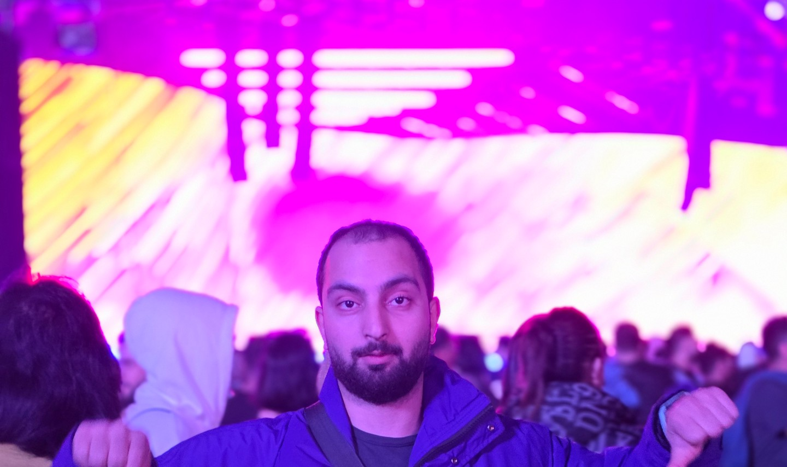

About

I’m a seasoned Software Engineer with a passion for building robust full-stack solutions. My expertise spans development, DevOps, system design, and cloud architecture, with a focus on logic, stability, and performance.
My main areas of expertise include robust back-end development (Go), modern mobile application development (Flutter, React Native), and versatile web solutions (JavaScript/TypeScript). I often delve into low-level programming and enjoy tackling complex challenges from architecting scalable systems to leading projects that significantly enhance user experiences. Outside of my professional work, I love playing around with various projects and constantly trying out new things.
You can reach me at blog@sarray.de.